Borage Family
1. Herbs (some tropical species are trees or shrubs)
2. Leaves simple, alternate, commonly hairy, without stipules.
3. Flowers perfect, usually actinomorphic, usually borne in a scorpioid or helicoid cyme (drepanium). Sepals 5, free or partially fused. Petals 5, fused. Stamens 5, epipetalous. Pistil compound, ovary superior, carpels 2, but deeply lobed, appearing as 4, style gynobasic, placentation basal.
4. Fruit 4 nutlets.
5. About 100 genera and 2000 species, widely distributed.
Boraginaceae does not have super distinctive leaf characteristics - they are typically simple, alternate, and lacking stipules. One good character, however, is that they tend to be covered in stiff (and irritating to touch!) trichomes. These trichomes cover most vegetative parts of the plant, including the stems, leaves, peduncles/petioles, and calyxes.
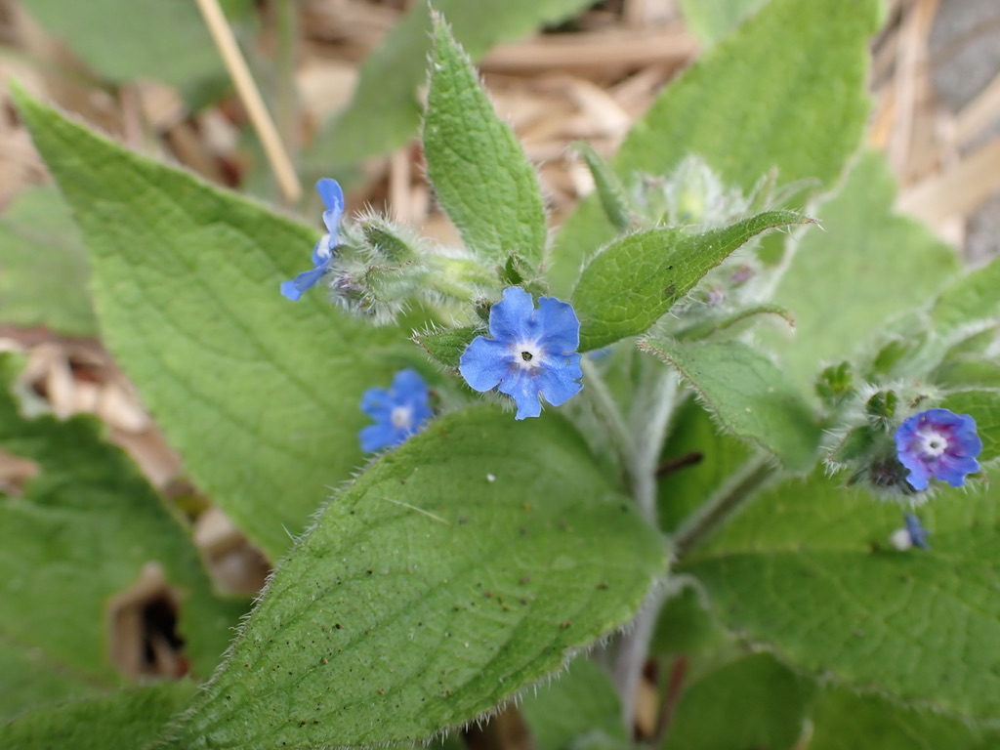
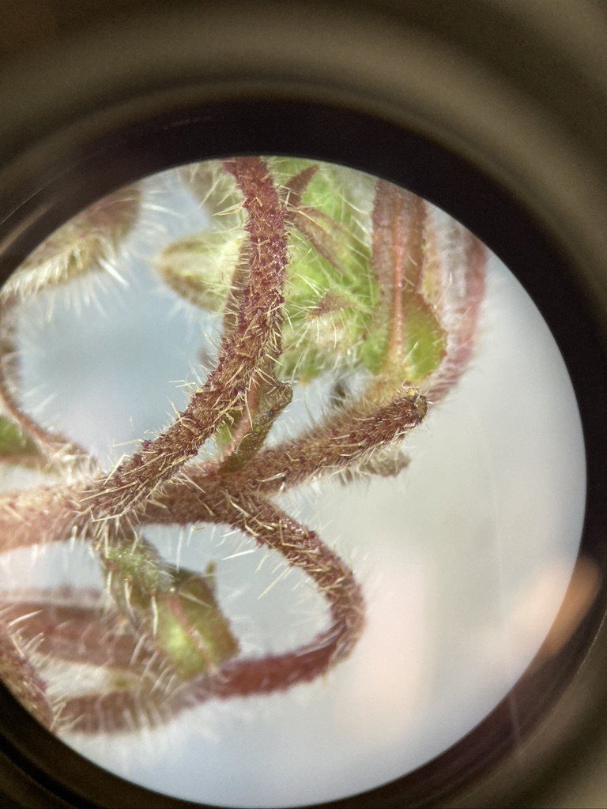
The flowers and inflorescence structure of Boraginaceae are quite distinctive, and once you get the visual in your mind it should be fairly easy to narrow down to this family. The flowers are usually actinomorphic, with 5 sepals, 5 fused petals, and 5 stamens. In addition, there are often corolla appendages (aka fornix) forming a ring around the throat of the flower. You can see the fornices quite well in the Myositis sp. (Forge-me-nots) below.
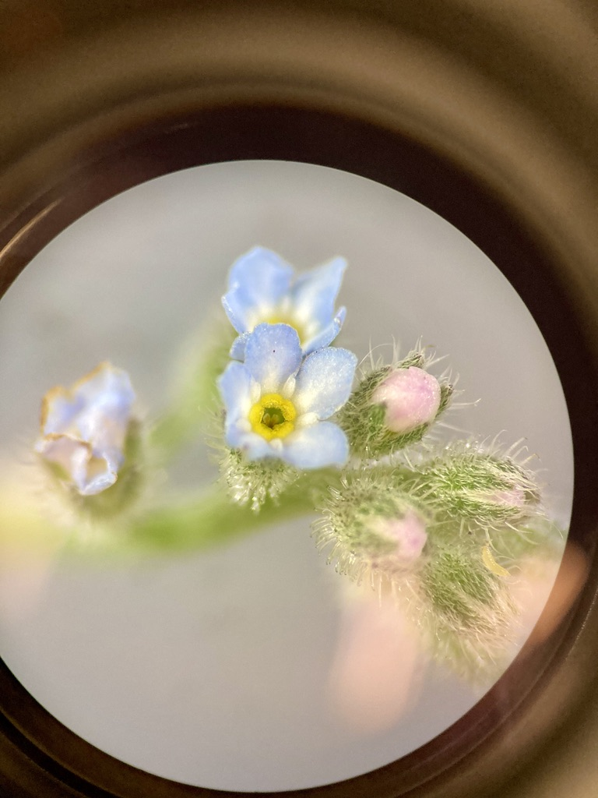
Here’s another example from Anchusa sp.
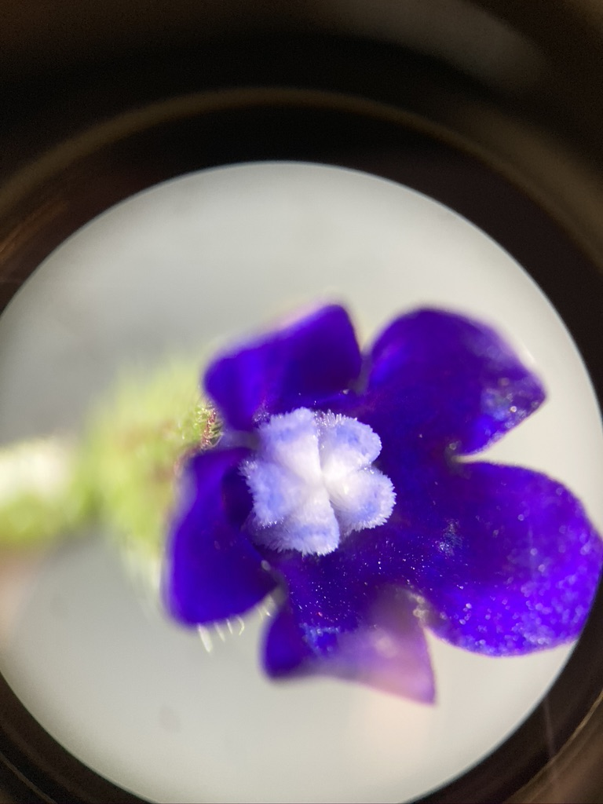
Borago officinalis (Borage) takes the corolla appendages to the next level, forming two fornices on each petal (instead of the single fornix that is usually present). The inner fornix takes the shape of a tower or pedestal, with epipetalous stamens emerging from the inner curve of the fornix. Examine the below pictures (use the family diagrams to help you), and see if you can identify the different parts of the Borage flower.
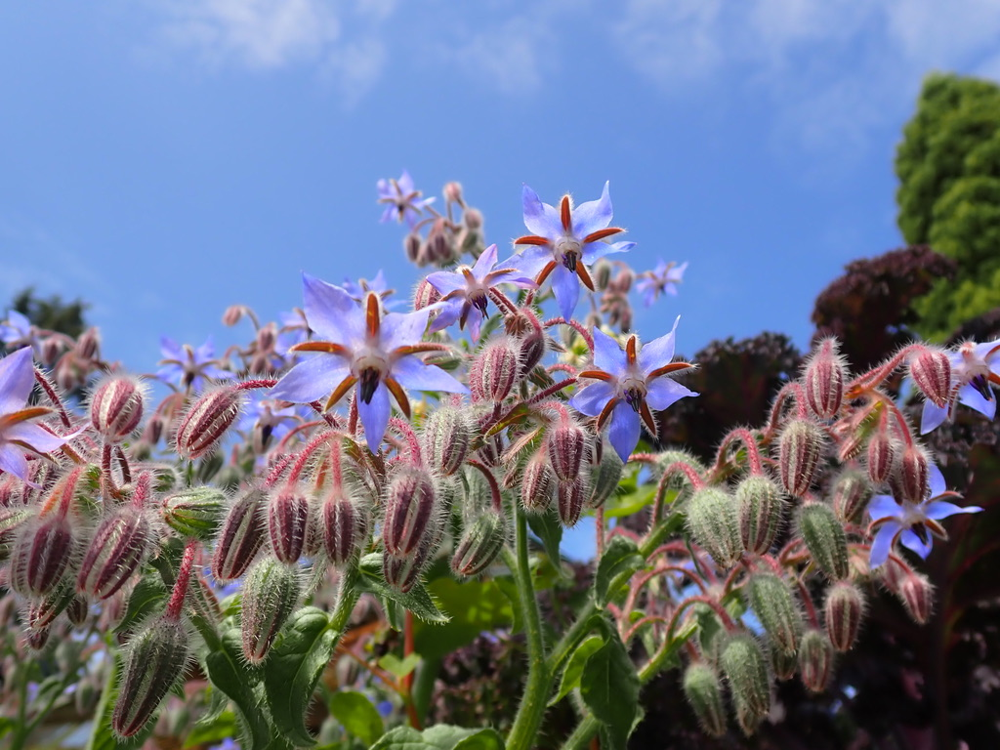
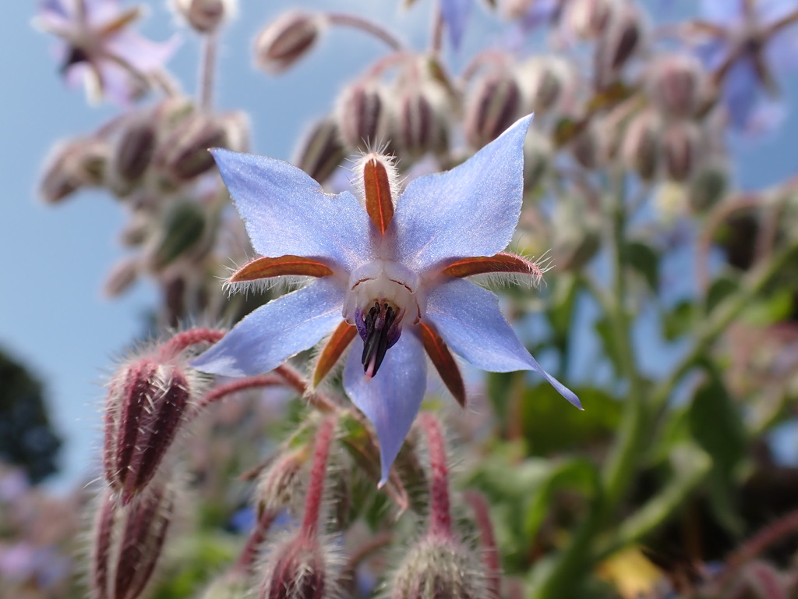
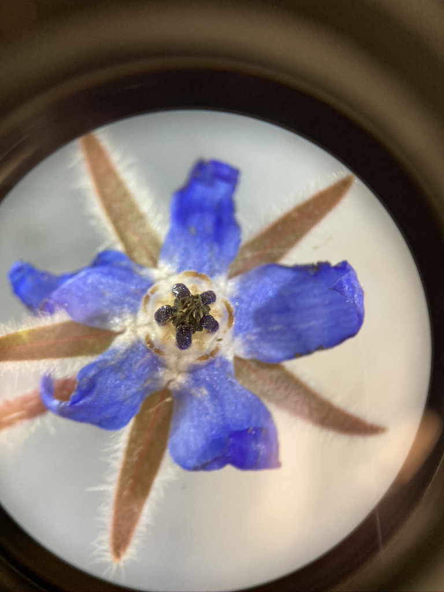 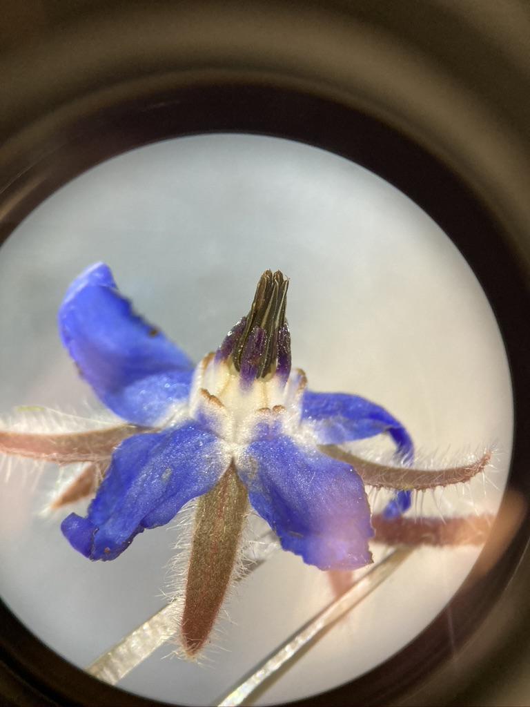
Here you can see a close-up of the inner fornix with the stamen attached.
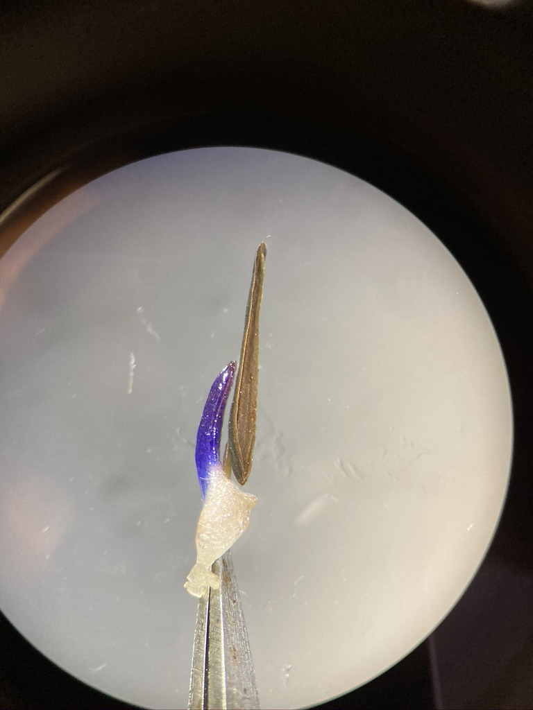
Another good characteristic for this family is the inflorescence type. Members of the Boraginaceae have helicoid or scorpioid cymes (see the family diagram for cartoons of what these look like). The development of the flowers spatially and temporally tend to give the inflorescence a coiled look, quite like a fern fiddlehead or a scorpion’s tail (hence “scorpioid” cyme). For the purposes of our lab, we won’t be asking you to differentiate between scorpioid vs helicoid cymes, but getting an appreciation for what they look like can help you identify this family in the field (or narrow down to Boraginaceae in a family ID quiz). Here are some examples:
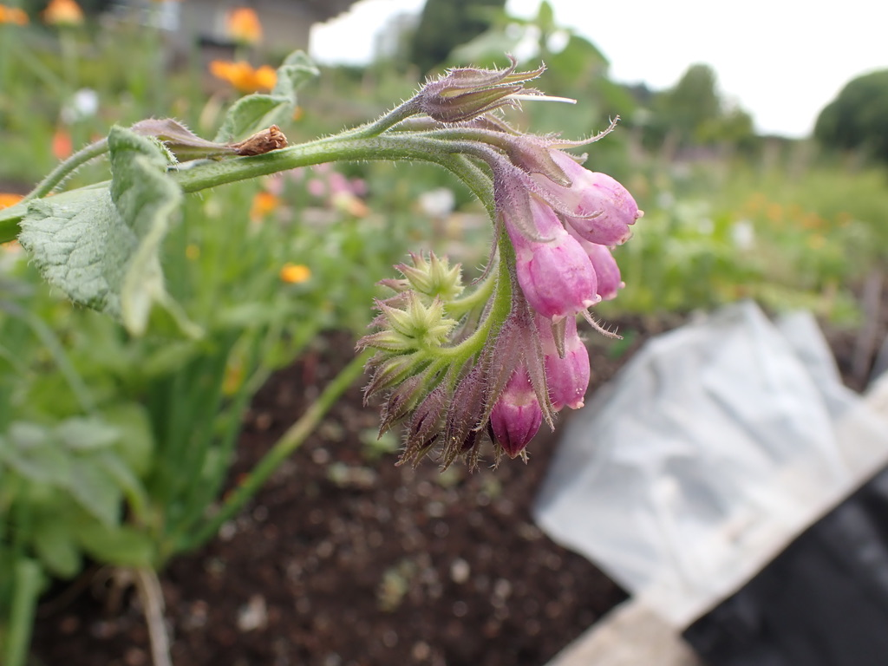
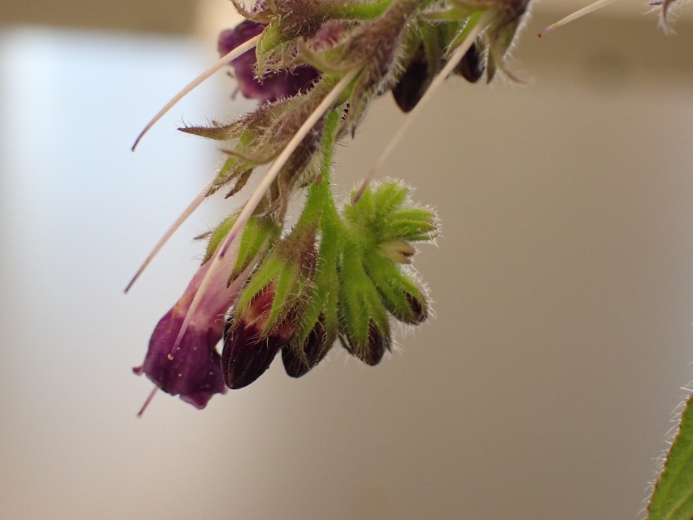
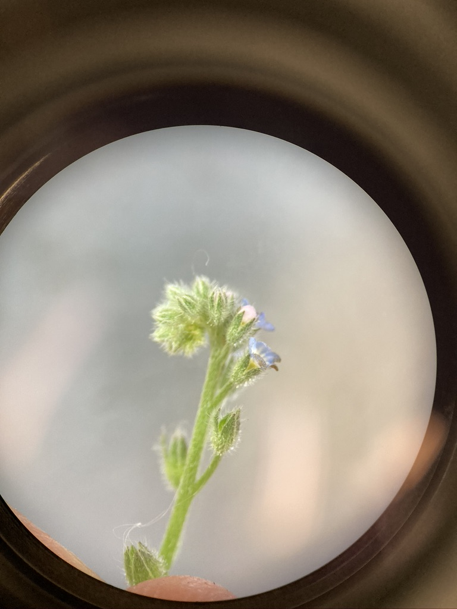
Similar to the Lamiaceae, members of the Boraginaceae typically form nutlets as their fruit type. They form four nutlets from two carpels, with a gynobasic style attached at the base and emerging from the center of the four nutlets. The nutlets also often have a thickened rim at the base. Here you can see a flower with 3 developed nutlets (the fourth has already fallen out):
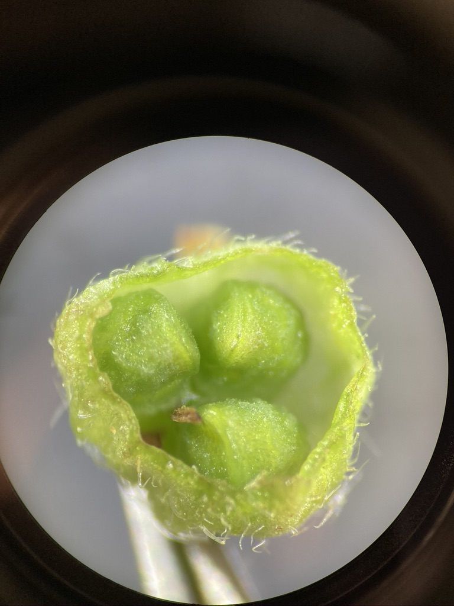
And here you can see the depressions that the thickened rims of the nutlets made in the receptacle of the flower.
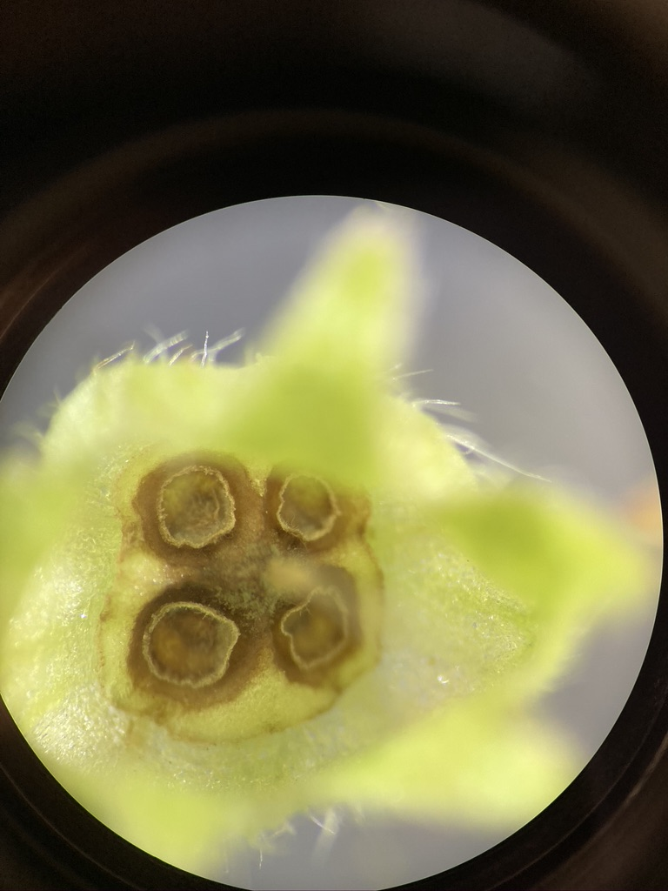
–>
–>
–>
–>
–>
–>
–> –>
–>
–>
–>
–>
–>
–>
–> –>